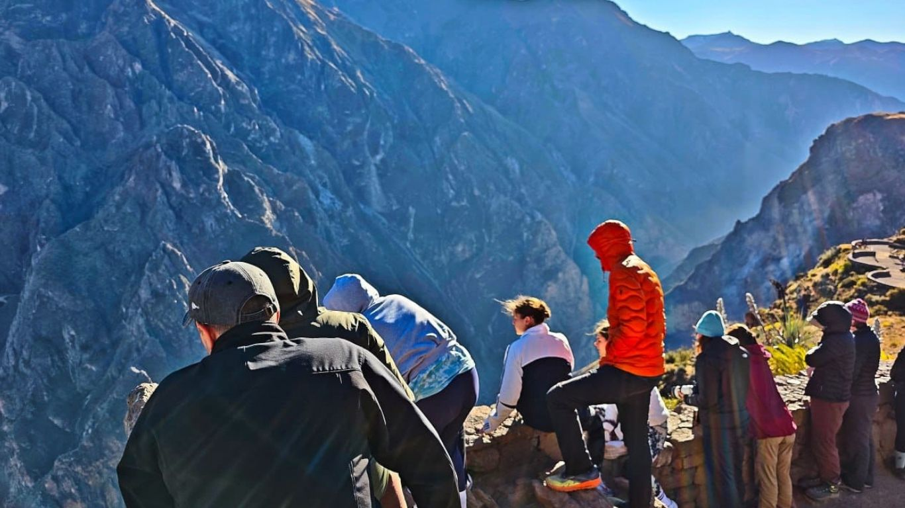

Day 01 · The descent
Into the canyon
- 3:00–3:30 a.m. — Pickup at your accommodation in Arequipa.
- Breakfast in Chivay after approximately three hours of travel.
- Cruz del Cóndor viewpoint at approximately 3,600 m, with time to look for condors and take photographs.
- Transfer to San Miguel at 3,200 m and begin the descent.
- Cross the bridge and reach San Juan de Chuccho at 2,230 m for lunch with a local family.
- Continue hiking to Sangalle Oasis at 1,900 m. Enjoy the natural surroundings and swimming pools, then stay overnight.